食品従事者が直面する「食中毒」を防ぐためには、目に見えない微生物（細菌やウイルス）の性質を正しく理解し、適切な管理手段（温度管理、加熱、洗浄・消毒など）を講じることが不可欠です。
本記事では、食品工場や飲食店の衛生管理において特に重要とされる10種類の微生物について、その特徴と予防策を網羅的に解説します。これらは、弊社の「食品安全教育アプリ」でもスマホで手軽に学習いただけます。
| 菌・ウイルス名 | 分類 / 特徴 | 主な原因食品 | 主な予防・対策ポイント |
|---|---|---|---|
| ノロウイルス | 感染型 / 非常に感染力が強い | 二枚貝、感染者を介した食品全般 | 手洗いの徹底、十分な加熱（85℃〜90℃・90秒以上）、次亜塩素酸ナトリウム |
| カンピロバクター | 感染型 / 発生件数最多、微好気性 | 鶏肉（生肉・加熱不足） | 中心部までの十分な加熱、二次汚染防止 |
| 腸炎ビブリオ | 感染型 / 好塩性、真水に弱い、増速が著しい | 魚介類（刺身、寿司）、二次汚染された調理器具 | 真水での十分な洗浄、低温保存（10℃以下）、調理器具の熱湯消毒 |
| 赤痢菌 | 感染型 / 非常に強い感染力、極めて少量の菌で発症 | 汚染された水・手指を介した食品全般 | トイレ後・調理前の確実な手洗い消毒、感染者の調理従事停止 |
| 腸管出血性大腸菌（O157等） | 感染型 / ベロ毒素産生、少量で発症 | 牛肉（生食・加熱不足）、生野菜 | 中心部までの十分な加熱（75℃・1分以上）、二次汚染防止 |
| リステリア | 感染型 / 冷蔵温度帯や塩分に耐える | 非加熱喫食食品（ナチュラルチーズ、生ハム等） | 期限内の消費、加熱殺菌、高リスク者の生食回避 |
| エルシニア（エンテロコリチカ） | 感染型 / 冷蔵庫内の低温環境（0〜4℃）でも増殖可能 | 豚肉、生水、汚染された生野菜 | 十分な加熱、生肉用の器具と野菜用の器具の明確な使い分け |
| サルモネラ | 感染型 / 乾燥に強い | 鶏卵、食肉類 | 十分な加熱、生卵の適切な温度管理 |
| 黄色ブドウ球菌 | 毒素型 / 耐熱性毒素（エンテロトキシン） | おにぎり、弁当、調理パン（手作業を経るもの） | 手指の洗浄・消毒、手袋の適切な使用、化膿創のある人の調理従事制限 |
| ウェルシュ菌 | 感染型（体内毒素型） / 嫌気性、芽胞形成 | カレー、シチュー、煮物類（大鍋料理） | 調理後速やかに冷却（小分け・急冷）、喫食前の再加熱、室温放置の禁止 |
| セレウス菌 | 毒素型・感染型 / 耐熱性芽胞と毒素 | チャーハン、パスタ、米飯・麺類 | 調理後速やかに冷却（保温する場合は65℃以上）、室温放置の禁止 |
| ボツリヌス菌 | 毒素型 / 嫌気性、芽胞形成、猛毒 | 真空パック食品、瓶詰、缶詰（低酸性） | 高温高圧殺菌（120℃・4分以上）、適切な要冷蔵管理（10℃以下） |
| 大腸菌群（指標菌および一部病原菌） | 衛生指標 / 熱に弱い、一部は病原性を持つ（病原大腸菌等） | 加熱後・加工後の食品全般、汚染された水 | 十分な加熱殺菌、二次汚染の確実な防止（※指標菌としての管理） |
年間を通じて、または特定の季節に極めて多くの食中毒事故を引き起こす代表的な病原体です。
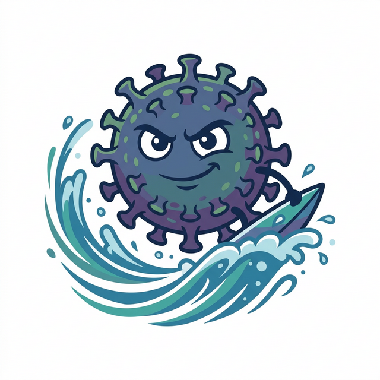
冬場にかけて猛威を振るい、食中毒の患者数において毎年トップクラスとなるウイルスです。
ごくわずかなウイルス量（数十〜数百個）で感染するほど非常に感染力が強く、アルコール消毒が効きにくいという厄介な特徴を持ちます。
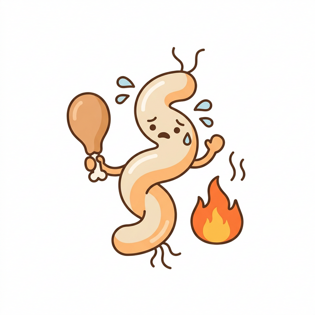
細菌性の食中毒としては、日本で発生件数が最も多い病原菌です。酸素が少しだけある環境（微好気性条件）を好みます。
海水中や海泥に生息し、塩分を好む（好塩性）細菌です。夏場（水温が上がる時期）の魚介類に多く付着しています。最大の特徴は増殖スピードが非常に速いことと、逆に真水（水道水）には非常に弱いことです。
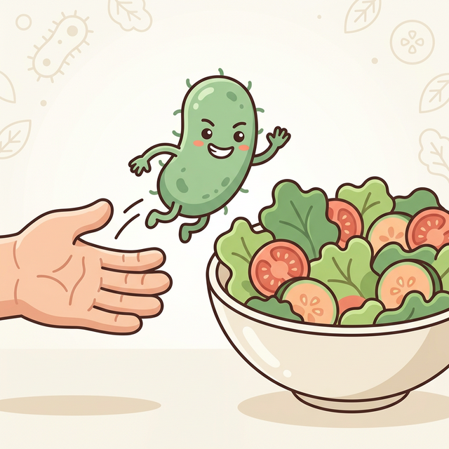
ノロウイルスやO157と同様に、ごくわずかな菌量（10〜100個程度）で発症するほど非常に感染力が強い細菌です。主に「人から人へ」、または「人から食品へ」と糞口感染（ふんこうかんせん）ルートで広がります。
感染すると重篤な症状を引き起こす危険性があり、衛生管理において特に厳格な対応が求められるグループです。
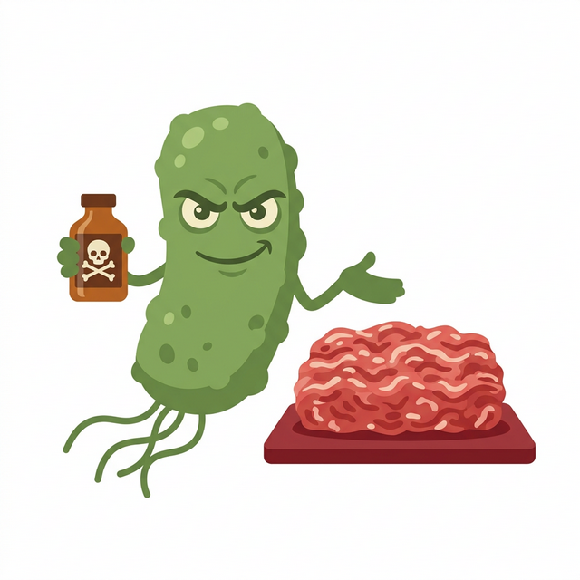
強力な「ベロ毒素」を産生し、出血性の下痢や、重症化すると溶血性尿毒症症候群（HUS）や脳症を引き起こし死に至ることもある恐ろしい細菌です。100個程度というごく少量の菌でも発症します。
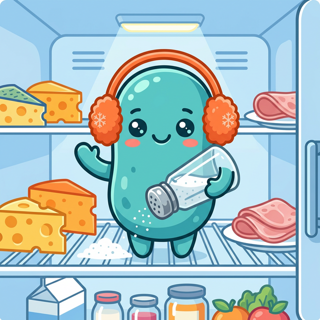
最大の特徴は、一般的な食中毒菌が増殖できない冷蔵庫内の温度（低温帯）や、高い塩分濃度の環境下でも増殖できることです。健康な成人は発症しにくいですが、妊婦、高齢者、免疫不全の人は重症化（敗血症や髄膜炎）しやすいため注意が必要です。
リステリア菌と同様に、冷蔵庫内の温度帯（0〜4℃の低温）でも増殖できる冷遇性の性質を持つ細菌です。冬でも元気に活動し、低温環境を過信すると、冷蔵保管中に菌数が増えて食中毒を引き起こす危険性があります。
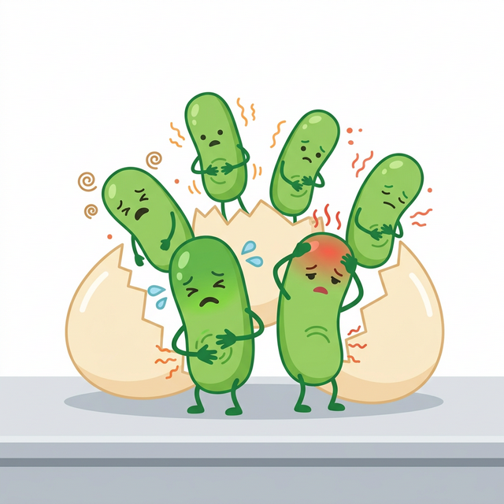
自然界に広く存在し、特に乾燥に強いという特徴を持っています。少量の菌でも発症することがあり、激しい腹痛や発熱を伴います。
「加熱すれば安全」という常識が通用しない細菌です。「熱に強い殻（芽胞）」を作ったり、食品中に「熱に強い毒（毒素）」を作り出す特性を持ちます。
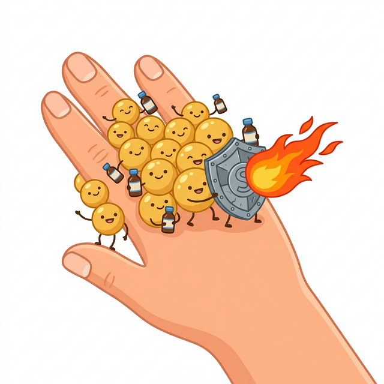
健康な人の皮膚や鼻の中などにも常在している菌です。食品中で増殖する際に「エンテロトキシン」という毒素を作ります。菌自体は熱で死にますが、一度作られた毒素は100℃で30分加熱しても無毒化されません。
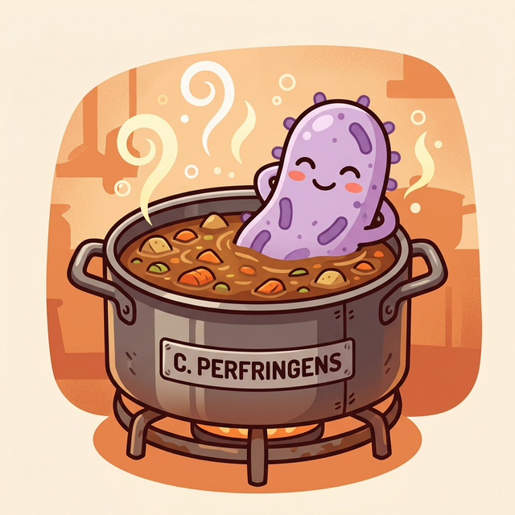
酸素を嫌う（嫌気性）性質と、熱に強いバリアである「芽胞（がほう）」を形成する性質を併せ持ちます。「給食病」とも呼ばれ、大量調理時に発生しやすいのが特徴です。
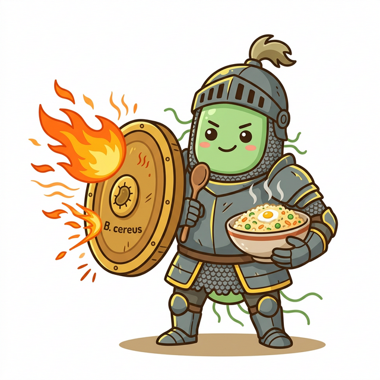
土壌などの自然界に広く生息し、農作物（特に米や小麦）を汚染します。この菌も熱に強い「芽胞」を作ります。症状によって「嘔吐型」と「下痢型」に分かれますが、日本で多い「嘔吐型」は、食品中に熱に強い毒素を作り出します。
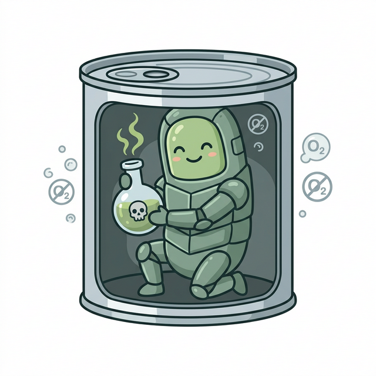
ウェルシュ菌と同様に酸素を嫌い（嫌気性）、「芽胞」を作ります。食品中で増殖して産生するボツリヌス毒素は、自然界に存在する毒素の中で最も強力と言われ、呼吸麻痺などの重篤な症状（高い致死率）を引き起こします。
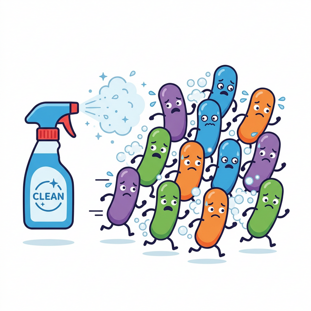
「大腸菌群」は一種類の特定の菌ではなく、「環境中の乳糖を分解して酸とガスを作る」という性質を持つ細菌グループの総称です。
この菌群が食品中で増えすぎると、酸やガスを出すことで味が酸っぱくなったり、異臭や容器の膨張といった「品質劣化・腐敗」を直接的に引き起こす原因にもなります。
また、衛生状態が悪かったり加熱が不十分であることを示す「単なる指標（バロメーター）」の役割を果たすだけでなく、中には消費者自身に発熱や下痢といった直接的な健康被害をもたらす「病原大腸菌（腸管侵入性・腸管毒素原性など）」も含まれています。
共通して熱に極めて弱いため、少しの加熱（一般的な殺菌条件）で容易に死滅します。
「彼を知り己を知れば百戦殆からず」
— 孫子『孫子の兵法』より
有名な孫子の兵法の言葉ですが、これは食中毒対策、ひいてはHACCP管理においても全く同じことが言えます。
敵（微生物の性質や弱点）を知り、己（自社の製造工程や衛生管理体制）を正しく把握すれば、食中毒という事故（敗北）を未然に防ぐことができるのです。
食中毒対策の基本は「つけない（洗浄・消毒）」「増やさない（温度管理）」「やっつける（加熱）」の3原則ですが、微生物の種類によって効く対策・効かない対策は異なります。
「熱に強い菌」には加熱後の速やかな冷却が、「低温に強い菌」には期限内の厳格な消費が、「毒素を作る菌」には作らせないための徹底した温度管理が求められます。取り扱う食品のリスクプロファイルに応じた、正しい管理手段を設定することが、HACCPの最も重要な第一歩となります。
本記事で解説した食中毒菌の知識を、従業員の皆様全員で共有しませんか？
弊社の「食品安全教育アプリ」なら、スマホ一つでいつでもどこでも、画像やクイズ形式で楽しく食品安全を学べます。
※法人導入やカスタマイズのご相談も承っております。
※当サイトはAmazonアソシエイト・プログラムの参加者です。